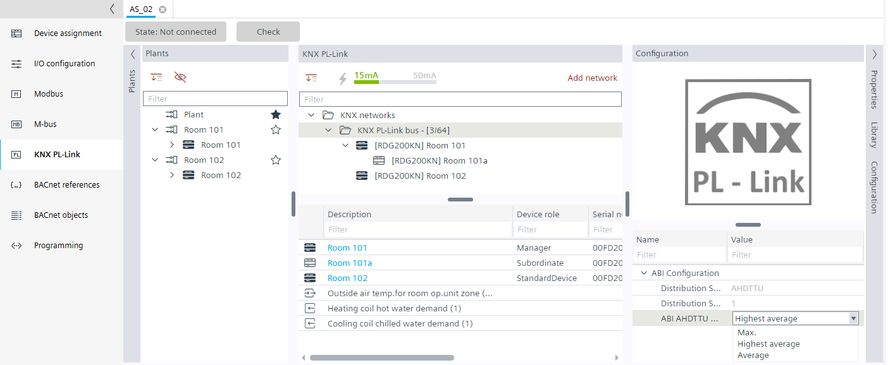

定义需求信号的聚合
可以为每个区域单独配置供暖和制冷需求信号。这意味着可以根据房间规格或行为为每个区域定义最佳设置。

管理设备和从属设备可以位于不同的区域。在这种情况下，控制程序中会创建多个需求信号，每个区域一个。
- In the KNX PL-Link area, select the KNX PL-Link bus.
- Select the data point Heating coil hot water demand (1).
- Select the Configuration tab on the right.
- In the Aggregation Function drop-down list, select an option:
- Maximum
- Highest average
- Average - Adapt the other demand signals as needed.

Explanation of the aggregation function
Maximum
- the highest demand value is taken to determine the new value
- this method ensures full comfort level since the room with the highest energy demand controls the flow temperature
Highest average
- only the 10 highest, valid demand values in the range 10%...100% are taken to calculate the new value, for example, (90%+98%+33%+56%) / 4 = 69.25%
- demand values <10% are ignored
- the number of 10 considered entries as well as the threshold values 10% / 100% are fixed
- the highest average method is a good compromise between energy efficiency and comfort since only the rooms with relevant energy demand are considered, but the rooms with highest demand may not reach the comfort setpoint
- the highest average method does not make a lot of sense if fewer than 10 hot / cold water consumers are connected to the distribution segment
Average
- all valid demand values in the range 0%...100% are taken to calculate new value
- the average method ensures the highest energy efficiency since rooms with low energy demand will lower the averaged resulting demand
- some rooms may not reach the comfort setpoint, especially in case of bad hydronic balancing